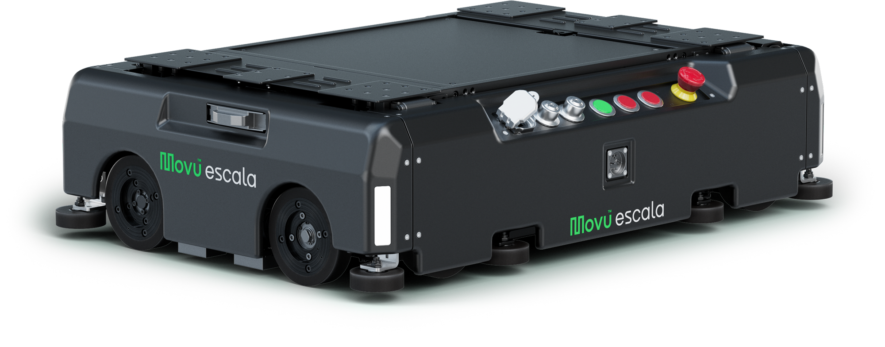

Movu NV
3D simulations of AGV fleets around the Eligo robotic picking arm to optimize picks per hour and throughput.
Overview
From February 2024 to July 2025, I was a Warehouse Robotics Intern at Movu NV in Lokeren, Belgium. I created 3D simulations of AGV (automated guided vehicle) fleets moving through a conveyor system around the Eligo robotic picking arm, to optimize picks per hour and throughput. [TODO: 1–2 sentences on what Movu builds and what Eligo does.]
My role
I built the simulations in Emulate3D, working in C#. [TODO: who you worked with and how your simulations were used by the team.]
What I did
I built custom 3D simulation environments in Emulate3D that model AGV fleets navigating a conveyor system around the Eligo picking arm. The simulation results helped shape the conveyor layout around Eligo. [TODO: one example of a layout decision the simulations informed.]
I also redesigned the AGV traffic control logic in a real-world-calibrated model, raising simulated throughput by 10%. [TODO: what changed in the traffic control logic.]
Results
- Simulated throughput raised by 10% through redesigned AGV traffic control logic
- Simulation results used to shape the conveyor layout around Eligo
[TODO: what you learned.]